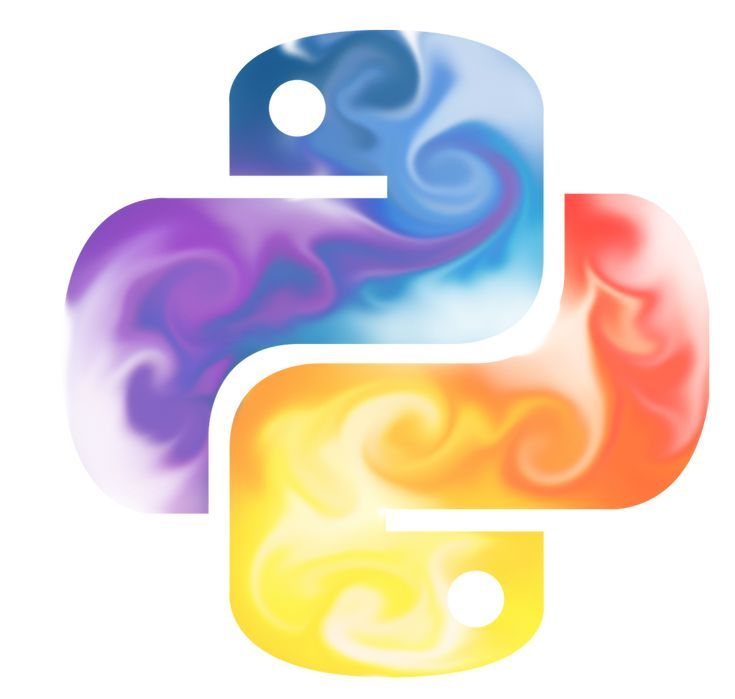
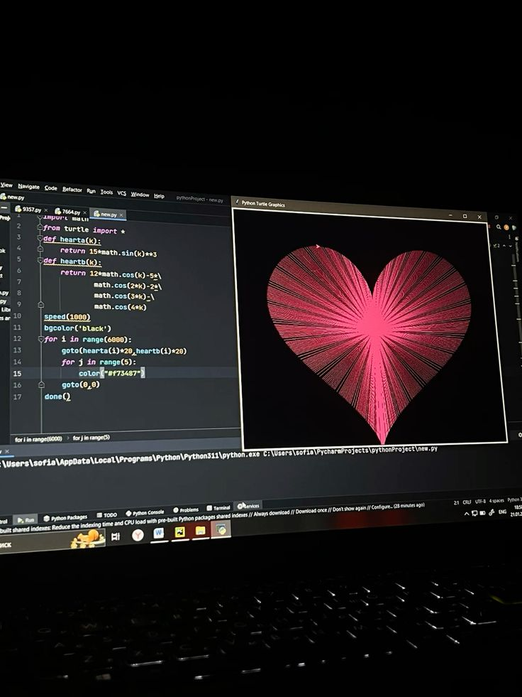

Примеры кода
Ниже приведены некоторые простые примеры кода на Python:
# Пример функции
def hello_world():
print("Hello, World!")
hello_world()
# Пример использования цикла
for i in range(5):
print(i)

Python был создан в конце 1980-х годов Гвидо ван Россумом в Нидерландах. Он был разработан как наследник языка ABC с целью улучшения его недостатков.
Первая версия Python была выпущена в 1991 году. С тех пор язык постоянно развивался и обновлялся.
Python — это высокоуровневый язык программирования, который поддерживает множество парадигм программирования, включая объектно-ориентированное, функциональное и императивное программирование.
Язык известен своей простотой и читабельностью кода.
| Версия | Дата выпуска | Основные изменения |
|---|---|---|
| Python 2.0 | 2000 | Сборка мусора, поддержка юникода |
| Python 3.0 | 2008 | Улучшения синтаксиса, удаление устаревших функций |
Ниже приведены некоторые простые примеры кода на Python:
# Пример функции
def hello_world():
print("Hello, World!")
hello_world()
# Пример использования цикла
for i in range(5):
print(i)